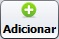
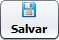

O cadastro de grupos de usuários pode ser acessado pelo menu Cadastros » Grupos de Usuários.
Para incluir um novo grupo, clique no botão  e preencha os campos do formulário. Veja as dicas de preenchimento a seguir:
Defina o código e o nome do grupo. Caso deseje dar acesso total (acessar, adicionar, alterar e apagar) a todas as rotinas, clique no botão Acesso Total.
Neste formulário há quatro abas: Cadastros, Operações, Relatórios, e Ferramentas.
Estas abas representam os acessos ao menu principal, e em todas elas tem as rotinas para definição do perfil. Marque as opções desejadas para definir o perfil. É possível marcar ou desmarcar todos os itens da coluna clicando nos botões na parte superior.
Após preencher o formulário, clique no botão .